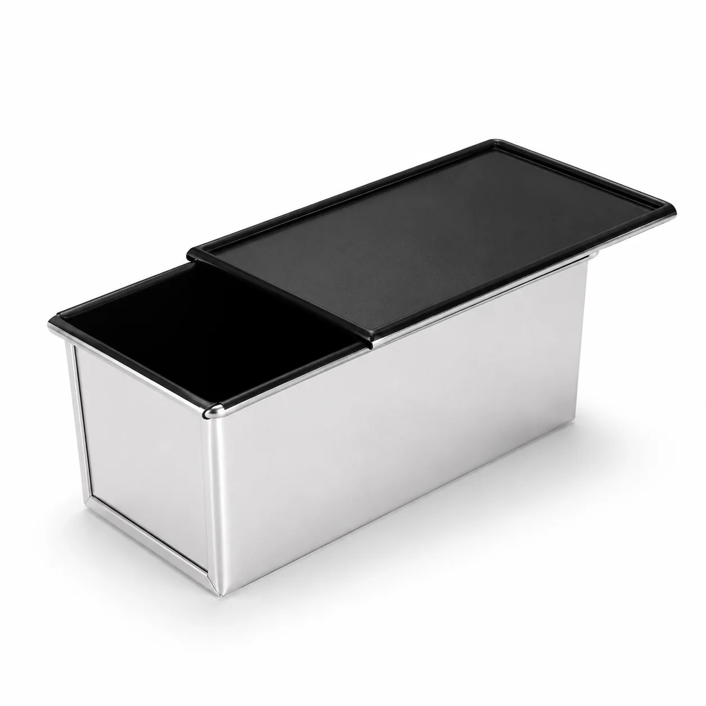
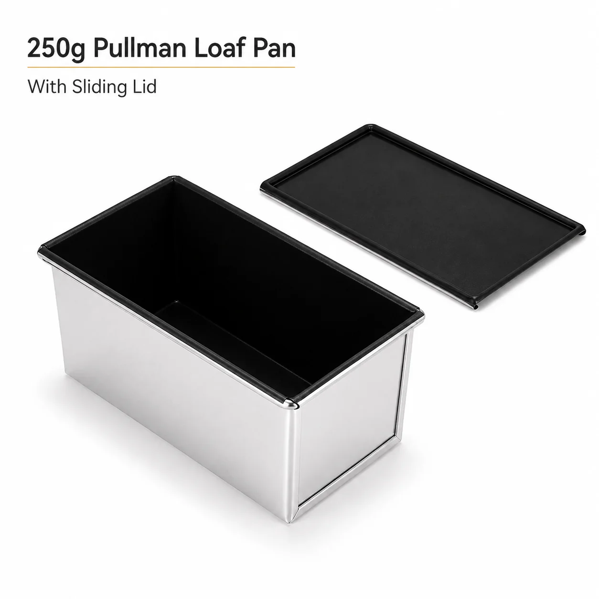
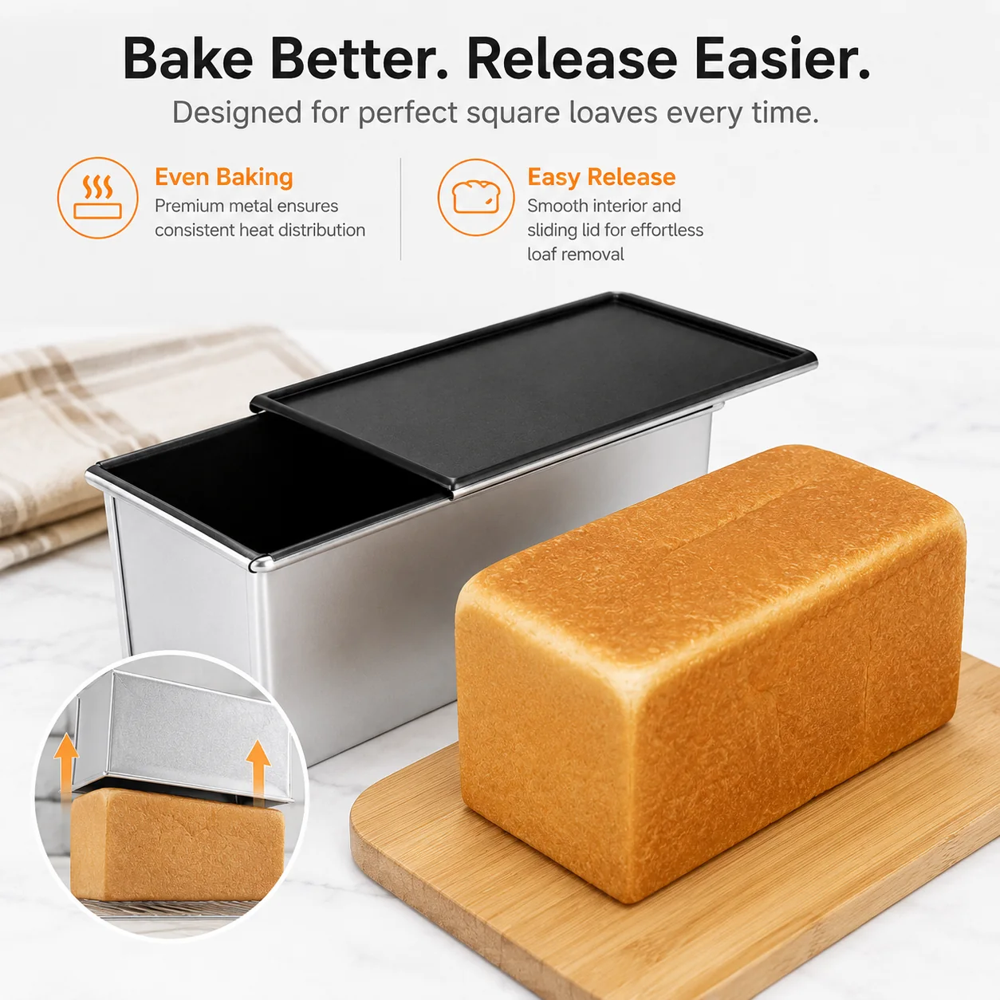

Depends on tooling status, material, coating batch, packaging and production setup.



Featured B2B Product
250g Shokupan Pullman Loaf Pan with Sliding Lid
A compact lidded bread pan designed for straight-sided Shokupan, Pullman and sandwich loaves. The sliding lid controls dough expansion to create a consistent square profile for retail and bakery programs.
Nominal format
250g Pullman loaf pan
Construction
Deep rectangular body with reinforced rim and removable sliding lid
Surface
Smooth dark interior; exterior and coating specification confirmed by project
Application
Shokupan, square sandwich bread and Pullman loaves
Customization
Material, gauge, finish, logo, label, color box and master-carton options
Quotation
Prepared after dimensions, quantity, destination market and packaging are confirmed
The 250g designation is a nominal format. Final dough weight, proofing level and baked-loaf dimensions depend on the approved pan dimensions and the buyer's recipe. Material, coating and food-contact requirements must be confirmed in the order specification.
Square loaf profileSliding lid controls the top shape during baking.
Buyer specificationDimensions, gauge and coating are confirmed before sampling.
Private labelLabels, sleeves, boxes and carton marks can be reviewed.
Commercial Specification
Details to confirm before quotation
Send a target sample, drawing or required dimensions together with the order quantity and destination market.
Metal type, thickness or target weight is reviewed against the required pan performance.
Top opening, base, body length, width, depth and lid fit are confirmed before sampling.
Interior release finish, exterior appearance, color and destination-market requirements are reviewed.
Label, sleeve, insert, color box, master carton, shipping marks and pack-out can be developed.
Sampling and production timing are quoted after tooling, finish and packaging are confirmed.
Why the Sliding Lid Matters
Designed for a controlled, square Shokupan profile.
- ✓Controlled expansion
The lid limits the top rise so the loaf develops a Pullman-style rectangular shape. - ✓Consistent portioning
A repeatable loaf profile supports slicing, sandwich presentation and retail packaging. - ✓Easy product removal
A smooth interior and correctly specified release coating support demolding after baking.
Buyer Questions
Common sourcing questions
Does 250g guarantee a fixed bread weight?
No. It is a nominal pan format. Actual dough weight and baked-loaf dimensions depend on the approved pan size, recipe, proofing level and baking process.
Can the pan dimensions or lid construction be customized?
Yes. Existing tooling can be reviewed first, or a custom format can be evaluated from a drawing, sample or target dimensions.
What should I provide for a quotation?
Please send target dimensions, expected dough format, material or target weight, coating, quantity, logo method, packaging and destination market.
Can LINHAO supply private-label packaging?
Labels, sleeves, inserts, color boxes, master cartons and shipping marks can be developed after artwork and pack-out requirements are confirmed.
Source this Pullman pan
Send your target size, quantity and market.
We will review the closest existing format or a custom development route.